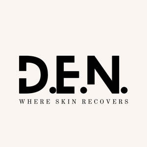

Trade Mark Journal No.2026/009 27 February 2026
UK00004337780 9 February 2026 (3)

- Class 3
- Skin moisturizer; Skin moisturiser; Skin moisturizers; Skin moisturisers; Skin lighteners; Skin lotion; Lotions for the skin; Skin lotions; Skin creams; Creams for the skin; Skin cleansers; Skin make-up; Skin hydrators; Skin emollients; Skin toner; Skin cream; Skin moisturizer masks; Oils for the skin; Skin toners; Cosmetics for use in the treatment of wrinkled skin; Skin masks; Skin cleansing lotion; Skin soap; Exfoliants for the care of the skin; Cosmetics for protecting the skin from sunburn; Skin moisturizers used as cosmetics; Skin lightening creams; Creams for tanning the skin; Colour cosmetics for the skin; Skin conditioners; Skin foundation; Skin cleansing cream; Cosmetic creams for dry skin; Skin cleansers [cosmetic]; Skin creams [cosmetic]; Skin creams [for cosmetic use]; Cosmetic creams for the skin; Skin texturizers; Milky lotions for skin care; Exfoliants for the cleansing of the skin; Cosmetics for the treatment of dry skin; Skin toners [cosmetic]; Skin care cosmetics; Moisturizing preparations for the skin; Skin fresheners; Skin whitening creams; Creams (Skin whitening -); Skin cream [for cosmetic use]; Creams for firming the skin; Skin care mousse; Moisturising skin creams [cosmetic]; Skin calming serum; Tissues impregnated with a skin cleanser; Moisturising skin lotions [cosmetic]; Non-medicated skin serums; Skin masks [cosmetics]; Cream for whitening the skin; Whitening the skin (Cream for -); Skin balms [cosmetic]; Cosmetics for use on the skin; Skin care creams [cosmetic]; Cosmetic creams for skin care; Skin care lotions [cosmetic]; Skin care oils [cosmetic]; Skin clarifiers; Skin cleansers [non-medicated]; Non-medicated skin creams; Skin creams [non-medicated]; Skin relief serum [cosmetic]; Skin cleansing foams; Non-medicated skin lotions; Cosmetic creams for firming skin around eyes; Skin lightening compositions [cosmetic]; Essences for skin care; Skin emollients [non-medicated]; Skin cleansing cream [non-medicated]; Smoothing emulsions for the skin; Foot masks for skin care; Skin recovery creams [cosmetics]; Cleansing milks for skin care; Cosmetic skin fresheners; Cosmetic skin enhancers; Skin care oils [non-medicated]; Perfumed oils for skin care; Skin whitening preparations; Clay skin masks; Oils for moisturising the skin after sunbathing; Hand masks for skin care; Skin care preparations; Skin fresheners [cosmetics]; Skin tonics [non-medicated]; Cosmetic preparations for skin firming; Skin balms (Non-medicated -); Non-medicated skin balms; Wrinkle removing skin care preparations; Non-medicated stimulating lotions for the skin; Skin hydrators for cosmetic purposes; Skin softening preparations; Cloths impregnated with a skin cleanser; Skin care (Cosmetic preparations for -); Cosmetic preparations for skin care; Skin, eye and nail care preparations; Skin whitening preparations [cosmetic]; Non-medicated skin clarifying lotions; Skin cleaners [non-medicated]; Wipes impregnated with a skin cleanser; Non medicated skin toners.
Michele Cassol Engel